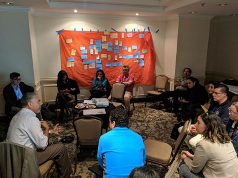
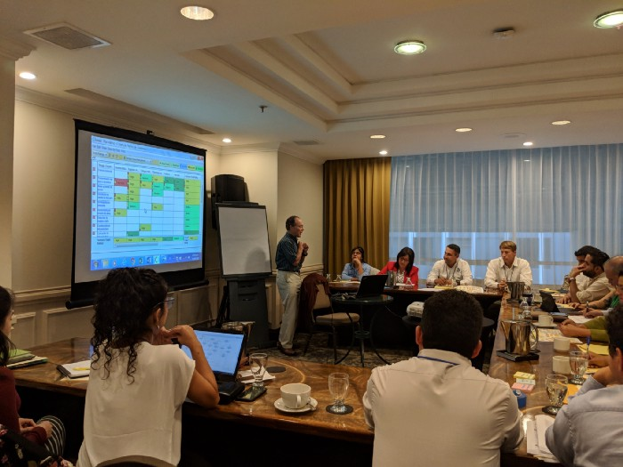

Recognizing Connections: Conserving Guatemala’s Biodiversity by Strengthening Governance
Chemonics
Funding Approach: Co-funded. Geographic Approach: Co-located. Sectors Integrated: Climate Change; Biodiversity; and Democracy, Human Rights, and Governance.
Guatemala is one of the most ecologically diverse nations on the planet. Its biodiversity underpins food security, clean air and water, economic development, and local livelihoods. Conserving Guatemala’s species and ecosystems ensures the provision of critical ecosystem services and the benefits they provide, such as improved governance and security. USAID/Guatemala’s Country Development and Cooperation Strategy (CDCS) recognizes these connections, stating that greater security and justice for citizens is inherently related to improved natural resource management. Nevertheless, Guatemala faces several challenges to effective natural resource management, such as limited institutional capacity, an inconsistent legislative and policy framework for protected areas, and a lack of reliable data on the state of key species and ecosystems. This story highlights how USAID’s Guatemala Biodiversity Project addressed these challenges by using political economy analysis to effectively integrate biodiversity conservation, sustainable landscapes, and governance strategies to improve natural resource management and governance and build national capacity to manage the Sistema Guatemalteco de Áreas Protegidas (SIGAP, or Guatemala’s System of Protected Areas).
After award, USAID/Guatemala and Chemonics, the Guatemala Biodiversity Project’s implementing partner, brought together sectoral specialists in biodiversity conservation, sustainable livelihoods, and environmental law to collaboratively develop a theory of change and results chain. The resulting situation models illustrated that tackling biodiversity conservation challenges without directly addressing underlying governance and political challenges would not respond to some of the primary threats to biodiversity. To better understand the interlinkages between biodiversity conservation and governance, the Guatemala Biodiversity Project conducted an applied political economy analysis, as part of the activity’s thinking and working politically approach.
The applied political economy analysis underscored that addressing governance challenges that affect ecosystems and human-ecological systems is key to achieving biodiversity conservation. This information helped USAID and Chemonics to identify the incentives, constraints, and underlying power dynamics impacting the behavior of stakeholders throughout Guatemala’s System of Protected Areas. The political economy analysis also uncovered, in a systematic and objective way, critical implementation challenges, such as illicit activities like wildlife poaching, occurring in protected areas. The team’s understanding of these dynamics helped staff to integrate conservation approaches, such as biodiversity monitoring and increased community engagement in conservation measures, with environmental governance initiatives, including institutional strengthening of key judicial and law enforcement entities.
USAID/Guatemala and Chemonics recognized the importance of the political economy analysis in encouraging the team to reevaluate their own assumptions and biases. The Guatemala Biodiversity Project engaged the entire technical team in the political economy analysis, rather than assigning it to one person or an outside contractor, which contributed to the political economy analysis’s effectiveness. The political economy analysis process increased staff’s openness to change, resulting in a team culture of transparency and adaptive management. USAID/Guatemala and Chemonics have continued to build on this process, including a pause-and reflect-session to discuss the political economy analysis findings and validate the task-level results chain and associated indicators for the activity’s monitoring, evaluation, and learning plan.
Some of the most tangible impacts of conducting the political economy analysis included acquiring vital territorial and thematic information to understand the Project’s working context and make decisions within a framework of thinking and working politically. Based on the political economy analysis findings, the Project was able to base its strategy on a local institutional ecosystem, focusing activities and work on relations with local actors, to reduce threats and drivers. The political economy analysis helped the Project to better understand and map organized civil society and other informal groups, including clandestine groups, and learn the rules of the game, both formal and informal. As a by-product of the political economy analysis process, team members were able to develop an overall vision, as well as to identify the need for integration and complementarity between the Project´s components.

Lessons Learned
Use political economy analysis to promote team cohesion and evidence-based decision-making.
Conduct and jointly analyze political economy analysis results at an activity’s inception to contribute to team cohesion and support for integration. Encourage consistent, open, and frank communication based on the evidence collected to reach and maintain a shared understanding.
Employ a thinking and working politically approach throughout design and implementation.
Use political economy analysis as a framework to consistently reflect on and adapt to changing conditions based on analysis, rather than assumptions or guesses. Promote a thinking and working politically approach through quarterly and end-of-year pause-and-reflect sessions to discuss the activity’s broader political context. Use an adaptive management approach to adjust integration between the conservation and governance elements as needed.
Allow the project team to test assumptions through the political economy analysis.
Having a well-experienced team also has the disadvantage that team members often have preconceived notions, deriving from their prior knowledge of sites and dynamics. For example, a team member that lived in one of the priority sites in the 1980s assumed that access to a specific fishing ground was free to all fishers, while some community members indicated otherwise. To prevent this type of assumption from interfering with the political economy analysis fact-finding process, team members were assigned to the sites they were less familiar with. By allowing contrasting findings to challenge assumptions, the Project improved the outcomes of the political economy analysis.
Learn More
Explore more case studies on the USAID Biodiversity Integration Case Competition website.
Learn more about biodiversity integration with other USAID technical sectors on the Biodiversity Conservation Gateway.
For more information of USAID/Guatemala and Chemonics’s work on biodiversity conservation, governance, and sustainable landscapes visit the project web page.